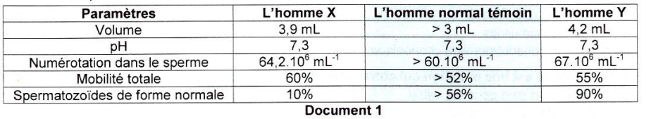
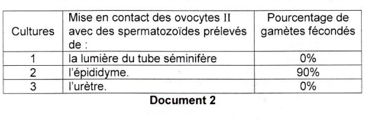
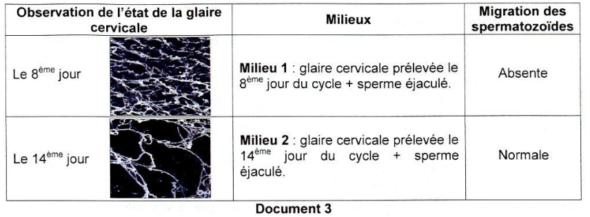
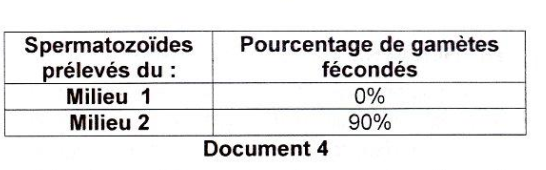
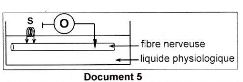
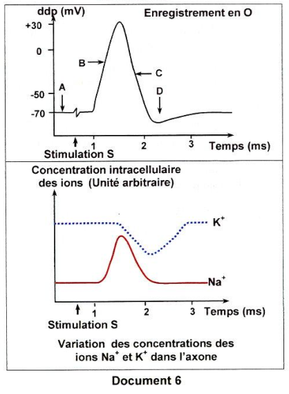

Sciences de la Vie
et de la Terre
Session de contrôle 2019 — Épreuve officielle simulée
Clique sur chaque verbe pour comprendre ce qu'attend le correcteur.
⚠️ Décrire sans interpréter = 0 pt.
⚠️ Nommer sans expliquer = incomplet.
⚠️ Affirmer sans justifier = non recevable.
⚠️ Rédiger un paragraphe entier = perte de temps.
⚠️ Ignorer les documents = hors sujet.
⚠️ Pas de légende = 0 pt.
Ce que tu dois savoir
Notions ciblées pour cette épreuve uniquement
Fibres sympathiques : Libération de noradrénaline → cardioaccélération + vasoconstriction → augmentation de la pression artérielle.
Fibres parasympathiques : Libération d'acétylcholine → cardio-modération → diminution de la pression artérielle.
ADH (hormone antidiurétique) : En cas d'hypotension, l'ADH augmente la réabsorption de l'eau au niveau des reins → augmentation de la volémie → augmentation de la pression artérielle.
Système rénine-angiotensine : L'hypotension active la sécrétion de rénine → formation d'angiotensine II → vasoconstriction + stimulation de la sécrétion d'aldostérone → augmentation de la réabsorption de Na⁺ → augmentation de la volémie → augmentation de la pression artérielle.
الألياف الودية تفرز النورأدرينالين مما يسبب تسارع القلب وتضيق الأوعية → ارتفاع ضغط الدم. الألياف اللاودية تفرز الأستيل كولين مما يسبب تباطؤ القلب → انخفاض ضغط الدم. الـ ADH يزيد إعادة امتصاص الماء في الكلى → زيادة حجم الدم → ارتفاع ضغط الدم. نظام الرينين-أنجيوتنسين يسبب تضيق الأوعية وزيادة إفراز الألدوستيرون → زيادة إعادة امتصاص الصوديوم → زيادة حجم الدم → ارتفاع ضغط الدم.
Épididyme : Acquisition du pouvoir fécondant grâce à des protéines membranaires permettant la reconnaissance du gamète femelle.
Urètre : Mélange avec les sécrétions des glandes annexes → masquage de l'antigène membranaire par un facteur de décapacitation.
Glaire cervicale : Au 8ème jour du cycle, la glaire est dense et à maillage serré → imperméable aux spermatozoïdes. Au 14ème jour, la glaire est filante et à maillage large → perméable → migration normale.
Capacitation : En traversant la glaire cervicale, le facteur de décapacitation est décroché → les spermatozoïdes deviennent capacités → capables de féconder l'ovocyte II.
الحيوانات المنوية تكتسب القدرة على الإخصاب في البربخ (épididyme). في الإحليل (urètre)، يحدث تثبيط هذه القدرة (décapacitation). في عنق الرحم، تتحول المخاطية من كثيفة (اليوم 8) إلى خيطية (اليوم 14) مما يسمح بمرور الحيوانات المنوية. عند عبور المخاطية، تُزال عوامل التثبيط وتصبح الحيوانات المنوية قادرة على الإخصاب (capacitation).
Potentiel de repos (phase A) : ddp = -70 mV, [Na⁺] intracellulaire faible, [K⁺] intracellulaire élevée.
Dépolarisation (phase B) : Suite à la stimulation, la ddp atteint le seuil de -50 mV → ouverture des canaux voltage-dépendants Na⁺ → entrée massive de Na⁺ → la ddp monte jusqu'à +30 mV.
Repolarisation (phase C) : À +30 mV, les canaux Na⁺ se ferment et les canaux voltage-dépendants K⁺ s'ouvrent → sortie de K⁺ → retour de la ddp au potentiel de repos.
Hyperpolarisation (phase D) : La ddp continue de diminuer légèrement (jusqu'à environ -80 mV) avant de revenir au potentiel de repos (rôle de la pompe Na⁺/K⁺).
Toxines : TTX (tétrodotoxine) bloque les canaux voltage-dépendants Na⁺ → pas de dépolarisation. TEA (tétraéthylammonium) bloque les canaux voltage-dépendants K⁺ → pas de repolarisation.
جهد الراحة (المرحلة A) = -70 mV، تركيز Na⁺ منخفض و K⁺ مرتفع داخل الخلية. زوال الاستقطاب (المرحلة B) : عند -50 mV تفتح قنوات Na⁺ المعتمدة على الجهد، مما يؤدي إلى دخول Na⁺ وارتفاع الجهد إلى +30 mV. إعادة الاستقطاب (المرحلة C) : عند +30 mV تغلق قنوات Na⁺ وتفتح قنوات K⁺، مما يؤدي إلى خروج K⁺ وعودة الجهد إلى -70 mV. الـ TTX يمنع قنوات Na⁺ والـ TEA يمنع قنوات K⁺.
Test-cross : Croisement entre un individu de génotype inconnu (S, aux ailes longues et yeux rouges) et un individu double récessif ([vg bw]).
Résultats : 4 phénotypes (32% [vg⁺ bw⁺], 32% [vg bw], 18% [vg⁺ bw], 18% [vg bw⁺]). Les proportions différentes de 25% indiquent que les deux gènes sont liés partiellement.
Crossing-over : Au cours de la prophase I de méiose, il y a échange de segments entre chromatides non-sœurs des chromosomes homologues → production de 4 types de gamètes (32%, 32%, 18%, 18%).
Particularité du mâle : Chez le mâle de la drosophile, il n'y a pas de crossing-over → les gamètes produits sont uniquement parentaux (50% [vg⁺ bw⁺] et 50% [vg bw]).
اختبار التهجين (test-cross) أظهر 4 أنماط ظاهرية بنسب مختلفة عن 25%، مما يعني أن الجينات مرتبطة جزئياً. العبور (crossing-over) يحدث في الطور التمهيدي الأول من الانقسام الاختزالي ويؤدي إلى إنتاج 4 أنواع من الأمشاج. عند ذكر ذبابة الفاكهة، لا يحدث العبور، لذلك ينتج الذكر نوعين فقط من الأمشاج (الأبوية).
Ministère de l'Éducation
EXAMEN DU BACCALAURÉAT
Pour chacun des items suivants (de 1 à 8), il peut y avoir une ou deux réponse(s) correcte(s). Reportez sur votre copie le numéro de chaque item et indiquez dans chaque cas la (ou les deux) lettre(s) correspondant à la (ou aux deux) réponse(s) correcte(s).
NB : toute réponse fausse annule la note attribuée à l'item.

doc1_spermogramme.png

doc2_cultures.png

doc3_glaire.png

doc4_resultats.png

doc5_dispositif.png

doc6_enregistrement.png
b- Établissez la relation entre les différentes phases de l'activité électrique de la fibre nerveuse et la variation de la concentration intracellulaire des ions Na⁺ et K⁺.
| Conditions | Résultats |
|---|---|
| Addition de la tétrodotoxine (TTX) dans le liquide physiologique. | - Absence de flux entrant des ions Na⁺ - Absence de flux sortant des ions K⁺ |
| Injection dans l'axone de la toxine tétraéthylammonium (TEA). | - Présence de flux entrant des ions Na⁺ - Absence de flux sortant des ions K⁺ |
- de préciser si les deux couples d'allèles sont liés ou indépendants.
- d'écrire le génotype de la femelle de la souche S.
Pour chacun des items suivants (de 1 à 8), il peut y avoir une ou deux réponse(s) correcte(s). Reportez sur votre copie le numéro de chaque item et indiquez dans chaque cas la (ou les deux) lettre(s) correspondant à la (ou aux deux) réponse(s) correcte(s).
NB : toute réponse fausse annule la note attribuée à l'item.